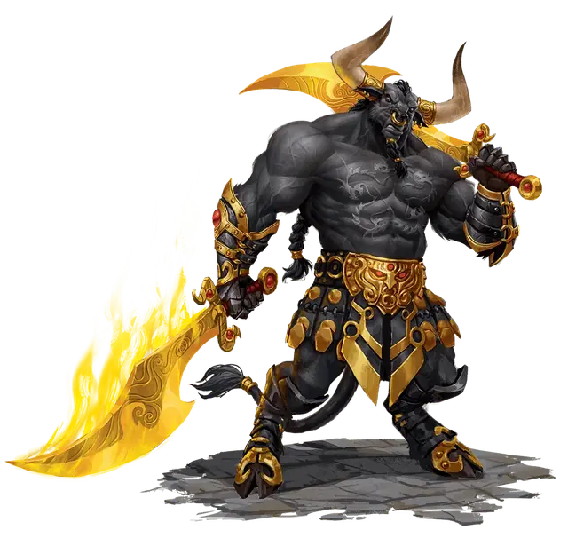

Торогар Стальной Кулак
Torogar Steelfist
Большой Монстр, законно-злой, именной НИП

Класс Доспеха 17 (природный доспех)
Хиты 168 (16к10 + 80)
Скорость 40 футов
| мод | спас | ||
|---|---|---|---|
| СИЛ | 25 | +7 | +11 |
| ЛОВ | 17 | +3 | +3 |
| ТЕЛ | 20 | +5 | +9 |
| мод | спас | ||
|---|---|---|---|
| ИНТ | 8 | −1 | −1 |
| МДР | 9 | −1 | −1 |
| ХАР | 16 | +3 | +3 |
Чувства тёмное зрение 60 футов, пассивное Восприятие 9
Языки Общий, Бездны
Опасность 11 (7200 опыта)
Бонус мастерства +4
Особенности
Особое снаряжение. Торогар носит перчатки пламенной ярости [gauntlets of Flaming Fury] и пояс силы огненного великана [belt of giant strength]. Без пояса его Сила равна 21. У него также есть монета души [soul Coin].
Кровавый натиск. Сразу после использования действия Рывок, Торогар может совершить одну рукопашную атаку рогами.
Запоминание пути. Минотавр может с лёгкостью вспомнить любой пройдённый путь.
Ярость (перезарядка после короткого или продолжительного отдыха). Бонусным действием Торогар может впасть в ярость на 1 минуту. Ярость прекращается досрочно, если Торогар теряет сознание или если его ход кончается, а он не атаковал враждебное существо и не получал урона со своего прошлого хода. Во время ярости Торогар получает следующие преимущества:
• Он получает преимущество на проверки и спасброски Силы;
• Он дополнительно наносит 3 урона, при попадании по цели рукопашной атакой оружием;
• Он получает сопротивление дробящему, колющему и рубящему урону.
Действия
Мультиатака. Торогар совершает три атаки: две скимитарами и одну рогами.
Скимитар. Рукопашная атака оружием: +11 к попаданию, досягаемость 5 футов, одна цель. Попадание: 14 (2к6 + 7) рубящего урона или 17 (2к6 + 10) рубящего урона в ярости плюс 3 (1к6) урона огнём от перчаток пламенной ярости.
Рога. Рукопашная атака оружием: +11 к попаданию, досягаемость 5 футов, одна цель. Попадание: 16 (2к8 + 7) колющего урона или 19 (2к8 +10) колющего урона в ярости.